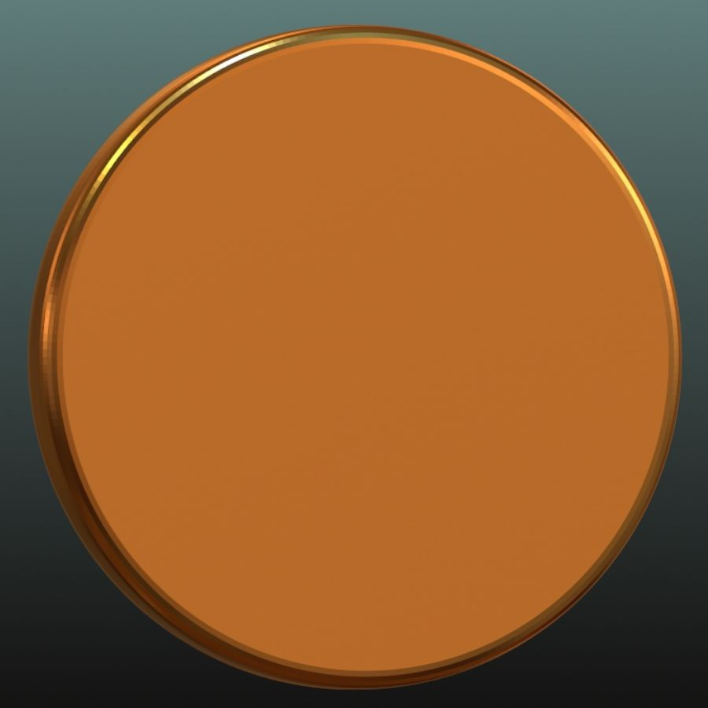

Einsendeaufgabe 1
Interaktiv animierte Scheibe
Aufgabe
Erweiterung
Dokumentation
Zur Aufgabe: Die Scheibe habe ich selbst in einem 3D-Skulpturprogramm erstellt. Ich habe sie dort mehrmals rotiert und dann abfotografiert. Die Anmation besteht hier aus einzelnen Frames, die bei jedem Knopdruck in das image Element geladen werden.
Zur Erweiterung: Das Känguru-Symbol stammt von Game-Icons.net Hier verwende ich ein Sprite Sheet. Die Background Position wird bei jedem Knopfdruck neu gesetzt.
Diese Seite benutzt Bootstrap 5.3.5. als CSS-Framework.